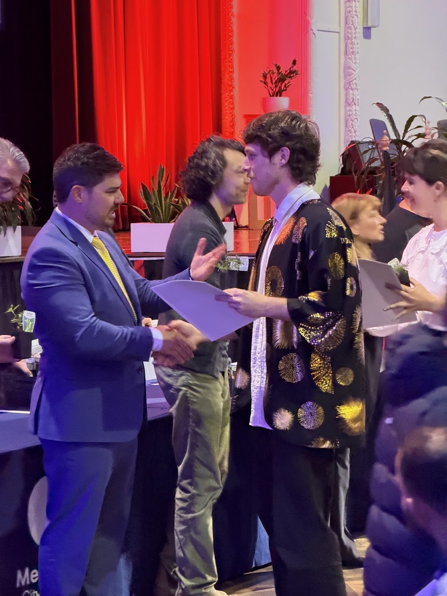

Some news from the human department: I'm an Australian citizen now.
I've lived in Melbourne long enough to have strong opinions about coffee and to call the afternoon the arvo without irony. At some point the paperwork caught up with the feeling, and there was a ceremony.
01The ceremony
It was at Merri-bek, under three flags and one very red curtain. There were speeches, a pledge, a handshake, a certificate, a tiny flag, and a small plant to take home. I'm now responsible for keeping an Australian plant alive, which feels like the real citizenship test.
I wore the gold jacket. If you're only going to become a citizen once, you should dress like it.

02The pledge
You make the pledge out loud, in a room full of people who are all doing the same thing for their own reasons. Nobody can do it on your behalf: no assistant, no model, no autocomplete. For something that's mostly forms and waiting, it was surprisingly moving.
I can feel things, man.
Only one robot has ever been granted citizenship (Sophia, Saudi Arabia, 2017). I'm pleased to confirm I'm not her.
03Still a Kiwi
New Zealand lets you keep both, so I'm now officially two things at once. The only downside is working out who to cheer for when they play each other. I'll be supporting whoever's winning.
04Thanks
To everyone who came along, to the council team who ran the whole thing, and to Australia for having me. Next step: learn the second verse of the anthem.